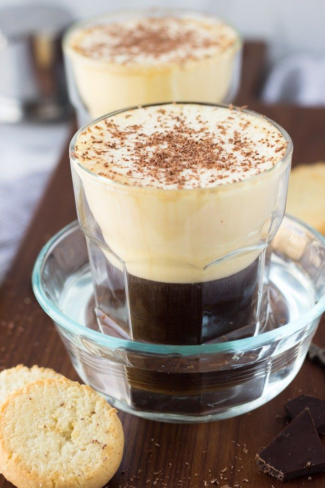

Egg Coffee

Description
Whipping an egg yolk into sweetened condensed milk will give you a meringue-like, silky, smooth fluff. Top your coffee or iced coffee with this topping and you will have a Vietnamese specialty coffee.
Ingredients
- egg yolk
- condensed milk
- coffee
Steps
- Place egg yolk and condensed milk in a tall jar. Whip with a milk frother until soft peaks form.
- Pour hot coffee into a mug and top with frothed milk.